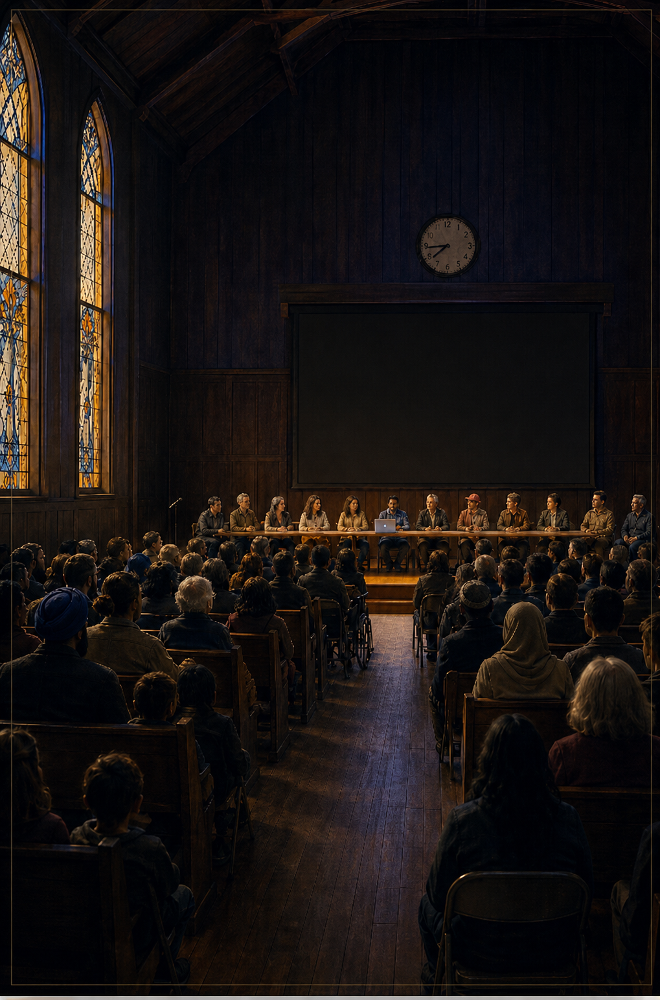

The moderator.
Holds time. Defends the unpopular question. Lets silence be silence.
Who Do We Get to Be in the Age of AI
The town hall was meant to last ninety minutes. It ran for nearly six. Twelve voices on stage. The questions you wanted to ask about AI, were afraid to ask, or could not yet say. Take a seat.
Most of you know I've spent the last few years living inside the AI machine. Teaching it. Writing about it. Building with it. Breaking it. Trying to make sense of it. From the first ChatGPT moment to today's frontier models and Claude Code, I've watched AI shift shape: tool, advisor, assistant, digital colleague, something that now does real work alongside us. Show full note ↓

The shelf has doom books, hype books, explainer books. It does not have an encounter book, one that refuses both false comfort and false despair.
A single town hall, on one evening in April 2026. Hundreds push back, sometimes win. A frontier-class AI runs live on the moderator's table, projected behind the panel. The system is on examination, not the model.
Eighty-five thousand words. Five to six hours. The follow-up to Humanlike.
Holds time. Defends the unpopular question. Lets silence be silence.
Twelve composite experts. They disagree.
Hundreds of voices. Every continent, every age, every faith. They push back.
A laptop on the table. A frontier-class model running live. The model is exhibit; the system is defendant.
“You will not finish this book and feel calm about AI. You will finish it and feel ready.”
From an internal reading panel · five composite first-impressions · honest reads, not external endorsements
The hall was already three-quarters full when she walked in. She was carrying a mug, not a notebook. Someone had set the cards on every chair before the doors opened, a single line in serif on cream stock, and as she came down the aisle she could see, here and there, a hand turning one of the cards over to check if there was anything on the back.
There wasn't. Just the four words, and the room. She stepped onto the stage, set the mug on the table beside the laptop, and looked out. The screen behind her was already glowing soft indigo. The model was awake. She was not the only one in the building who had not slept well.
The book is free for the first 100 readers. The only favour we ask in return is an honest review when you finish.
→